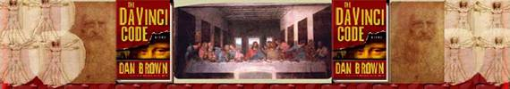
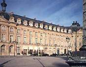
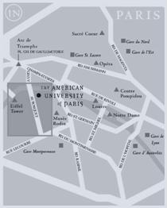
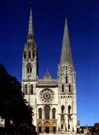
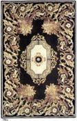
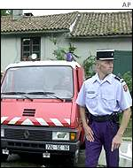
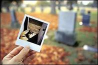

Chapter 1 annotations

Chapter 1
Jordan Tirrell-Wysocki
Rachel Sleeman
Renaissance bedroom
Louis XVI furniture
Hand-frescoed walls
Mahogany four-poster bed
Jacquard bathrobe
Hotel Ritz Paris
Concierge
The American University of Paris
Religious Symbology, Harvard University
Pagan symbolism hidden in the stones of Chartres Cathedral
"Mais, monsieur"
Vatican
Paris
Guest Relations Handbook
Boston Magazine city's top ten most intriguing people
American University of Paris's Pavillon Dauphine
The
Symbology of Secret Sects
The Art of the Illuminati
The Lost Language of Ideograms
Religious Iconology
Curriculum vitae
Harrison Ford
Harris tweed
Burberry turtleneck
Savonnerie carpet
Robert Langdon A fictional character who is also the hero of Dan Brown's earlier novel, Angels and Demons. He is a professor of religious symbology at Harvard University, author of several books that include The Symbology of Secret Sects, The Art of the Illuminati, The Lost Language of Ideograms, and Religious Iconology. In the novel he was featured in Boston Magazine's article on the city's top ten most intriguing people. Visit his web page, www.robertlangdon.com for more information on this well-known character, or visit his author's page, www.danbrown.com for more about the man who created him.
Renaissance bedroom Furniture in the Renaissance style, very ornate. A bed might have "inset burled panels framed with burled moldings, a huge open carved crest, full burled columns, fancy carved side finials, gold incised carvings and large burled columns on the footboard." From http://www.souhantq.com/bd/bd-1120.html, Sept 20, 2004. For further descriptions of a Renaissance bedroom, visit the above site.
http://www.mattress-plus.com/grand_renaissance_bedroom.php, Sept 20 2004.
Louis XVI furniture Louis XVI was known as The Sun King. He reigned from 1643-1715 and had amazing courts in Paris and Versailles. The style of furniture is characterized by marquetry inlays, opulence and grandiose size. http://www.collectingnetwork.com/furnitureguide.htm, Sept. 20 2004.
Hand-frescoed walls A painting technique in which the pigment is applied with the plaster of the wall so it becomes a permanent part of the wall. A famous example of a fresco is "Delphic Sibyl" by Michelangelo, found in the Sistine Chapel.
http://search.eb.com/eb/article?tocId=9035374&query=fresco&ct=eb, Sept 20, 2004
Mahogany four-poster bed- Mahogonay is a tall evergreen tree with hard wood that turns reddish brown when mature. Most commercial mahogany comes from other genera in the family, such as African Khaya and Entandophragma.
"mahogany." Encyclopædia
Britannica. 2004. Encyclopædia Britannica Online.
20 Sept. 2004 <http://search.eb.com/eb/article?tocId=9050141>.
Jacquard bathrobe Jacquard is a very expensive type of fabric woven
on a jacquard loom. The jacquard weave is used to make allover figured fabrics
such as tapestries and brocades. "textile." Encyclopædia Britannica.
2004. Encyclopædia Britannica Online.
20 Sept. 2004 <http://search.eb.com/eb/article?tocId=60784>.
The jacquard loom was developed in 1804-05 by Joseph-Marie Jacquard. It allows the weaver to control individual warp yarns.
image from "Jacquard loom." Encyclopædia Britannica. 2004. Encyclopædia Britannica Online. 30 Oct. 2004 <http://search.eb.com/eb/article?tocId=9043218>.
Hotel Ritz Paris A luxury hotel located at 15 Place Vendôme, Paris, and founded in 1898 by César Ritz. Rooms range from 610 Euros for a room to 8500 for an Imperial Suite. The Hotel Ritz is frequented by royalty, celebrities and other people of high society.

Concierge- con·cierge ( P ) Pronunciation Key (kô-syârzh) n.
- A staff member of a hotel or apartment complex who assists guests or residents, as by handling the storage of luggage, taking and delivering messages, and making reservations for tours. http://dictionary.reference.com/search?q=concierge, Sept. 20 2004
F. concierge, in OF. cumcerges, concerge, -ciarge, -sirge, -sierge, -cherge, whence med.L. consergius (in text of 1106): derivation unknown. Entry printed from Oxford English Dictionary Online © Oxford University Press 2004.
The American University of Paris Founded in 1962 by Lloyd DeLamater, The AUP is an independent college of liberal arts and sciences. It is accredited in the United States by the Commission on Higher Education of the Middle States Association of Colleges and Schools. It is the oldest American higher education institution in Europe.

Religious Symbology, Harvard University The oldest and one of the most prestigious higher education institutions in the US, Harvard was founded in 1636 in Cambridge, MA. It began as a college, but became a university in 1782 with the establishment of a medical school. "Harvard University." Britannica Concise Encyclopedia. 2004. Encyclopædia Britannica Online. 1 Nov. 2004 <http://search.eb.com/ebc/article?tocId=9366672>. The official Harvard website does not list any professors of religious symbology.
Nov. 1, 2004
Chartres Cathedral


"Chartres Cathedral is Cathedral of Notre-Dame at Chartres, one of the most influential examples of High Gothic architecture. The main part of this great cathedral was built between 1194 and 1220. It replaced a 12th-century church of which only the crypt, the base of the towers, and the western facade remain. Abandonment of the traditional tribune galleries and the use of a unique type of flying buttresses allowed for a larger clerestory (windowed wall of a room that rises higher than the surrounding roofs to light the interior space.) Remarkable stained-glass windows and a Renaissance choir screen add to its beauty." "Chartres Cathedral." Britannica Concise Encyclopedia. 2004. Encyclopædia Britannica Online. 1 Nov. 2004 <http://search.eb.com/ebc/article?tocId=9360416>."The Cathedral at Chartres was the site of an Hibernian (Irish) mystery center and later a Druid (an order of men among the ancient Celts of Gaul and Britain, who, according to Cæsar were priests or religious ministers and teachers, but who figure in native Irish and Welsh legend as magicians, sorcerers, soothsayers, and the like- Entry printed from Oxford English Dictionary Online © Oxford University Press 2004) cave sanctuary containing the Black Madonna" http://www.vermontel.com/~vtsophia/DION2.htm, Nov 1, 2004.
"If one studies the representations of the Seven Liberal Arts (important to Freemasonry, they are grammar, rhetoric, logic, arithmetic, geometry, music, astronomy) in the twelfth century one realizes that they are only a link in the whole chain of representations of this subject, and that a long tradition of ideas and forms lies behind their images. It is generally agreed that the first facade on which the Seven Arts were represented was that of the Royal Portal of Chartres Cathedral. ...these systems of decoration indicate in different ways the relation of secular learning to theological truths." The Seven Liberal Arts Presented to the Northern California Research Lodge By Thomas D. Worrel, March 20, 1997 (revised January 2002) http://mill-valley.freemasonry.biz/worrel/seven-liberal-arts01.htm, Nov 1st, 2004.
"Mais, monsieur"- French for "But, sir"
Vatican conclave The meeting of Roman Catholic cardinals assembled for
the election of a new Pope. In Brown's previous novel, Angels and Demons,
the cardinals have been summoned to Rome for just such an election. The
"Vatican" is often used to describe the leadership
structure of the Roman Catholic Church under the pope as well as the geographical
area in the city fo Rome designated as Vatican City. "Independent papal state, southern Europe, within the commune
Rome, Italy.Area: 108.7 acres (44 hectares). Population (2001 est.): 900. Its
medieval and Renaissance walls form its boundaries except on the southeast at
St. Peter's Square. Within the walls is a miniature nation, with its own diplomatic
missions, newspaper, post office, radio station, banking system, army of more
than 100 Swiss Guards, and publishing house. Extraterritoriality of the state
extends to Castel Gandolfo and to several churches and palaces in Rome proper.
Its independent sovereignty was recognized in the Lateran Treaty of 1929. The
pope has absolute executive, legislative, and judicial powers within the city.
He appoints the members of the Vatican's government organs, which are separate
from those of the Holy See. The many imposing buildings include St. Peter's
Basilica, the Vatican Palace, and the Vatican Museums. Frescoes by Michelangelo
in the Sistine Chapel, by Pinturicchio in the Borgia Apartment, and by Raphael
in the Stanze (rooms in the papal apartments) are also there. The Vatican Library
contains a priceless collection of manuscripts from the pre-Christian and Christian
eras. The pope and other representatives of the papal state travel widely to
maintain international relations." "Vatican City." Britannica Concise Encyclopedia.
2004. Encyclopædia Britannica Online. 1 Nov.2004 <http://search.eb.com/ebc/article?tocId=9381820>.
Paris "City (pop., 1999: 2,125,246; metro.
area, 9,644,507), river port, capital of France. It
is now located on both banks of the Seine River. … It is now the financial,
commercial, transportation, artistic, and intellectual centre of France. The
city's many attractions include the Eiffel Tower, Notre-Dame de Paris, the Louvre,
the Panthéon, Pompidou Centre, and the Paris Opera, as well as boulevards, public
parks, and gardens."
"Paris." Britannica Concise Encyclopedia. 2004.
Encyclopædia Britannica Online.
1 Nov.2004 <http://search.eb.com/ebc/article?tocId=9374569>.and
http://www.paris.fr/
http://www.fas.org/irp/imint/docs/rst/Sect4/Sect4_4.html, Nov 1st, 2004.
Guest Relations Handbook There is a Guest Relations Handbook for the Hotel Ritz, where the VIP guests write message about their stay. However, on the cover, it says simply "Ritz Paris," not anything about "sleep like a baby in the city of lights."
E-mail from Matthieu Goffard, Press Office for the Ritz Paris, to Jordan Tirrell-Wysocki, 11/1/04
Boston Magazine - city's top ten most intriguing people- "For more than 40 years, Boston magazine's experienced writers, editors, and designers have captured all sides of our city with award-winning and insightful writing and groundbreaking reporting and design. … We bring a timely, local take to matters of travel, shopping, money, food, fashion, home, and health, through the magazine and in collaboration with our broadcast partners. Pull it all together and it's not hard to understand why our percentage of newsstand copies sold is among the highest of any magazine of any kind in the United States. Or why we've been named among the three best city magazines in the nation seven times in the last eight years by the City and Regional Magazine Association."
http://www.bostonmagazine.com/content.php?name=aboutus.txt Nov 1st, 2004.
Boston Magazine has at times published articles about the city's most intriguing people, but editor Jon Marcus stressed that the reference in The Da Vinci Code is otherwise entirely fictional. (e-mail from Jon Marcus, editor of Boston Magazine, to Jordan Tirrell-Wysocki on 11/30, 2004).
American University of Paris's Pavillon Dauphine An elegant building at the entrance to the Bois de Bologne, used for cocktail parties, dinners, seminars, weddings, etc. It was built at the beginning of the 20th century.
http://www.theflews.com/Paris/Week13aGallery.htm, Nov 1, 2004.
The Symbology of Secret Sects, The Art of the Illuminati, The Lost Language of Ideograms, Religious Iconology- These are all fictional books authored by the fictional character Robert Langdon, All of these issues come into play in one form or another throughout the novel.
Curriculum vitae - curriculum- A course; spec. a regular course
of study or training, as at a school or university. (The recognized term in
the Scottish Univerities.) curriculum vitæ, the course of one's life; a brief account
of one's career.
1633 Munimenta Univ. Glasg. (1854)
III. 379 Finito anni curriculo discessurum. 1643 Ibid. II. 317 Curriculum quinque annorum. 1824
J. RUSSELL Tour Germ. (1828) I. iii.
134 When the [German] student has finished his curriculum, and leaves
the university. 1829 Glasg. Univ. Cal. 39 The
curriculum of students who mean to take degrees in Surgery to be three
years. 1870 ROLLESTON Anim. Life Introd. 84 The
completion of the entire curriculum of metamorphosis. 1888
BURGON Lives 12 Gd. Men II. ix. 201
Butler's immortal Work has..been elbowed out from the Oxford curriculum. 1902
New Internat. Encycl. III. 21/2 Anciently biography was more of a mere
curriculum vitæ than it is now. 1939 'M. INNES' Stop Press II. iv. 269,
I don't know much about Benton's curriculum vitæ... He must have an orthodox..academic
record. 1941 KOESTLER Scum of Earth 59 His superiors..knew
all about my professional travels from the curriculum vitae in their
files, written by myself. 1954 New Yorker 25
Dec. 18/2 As for Mr. Lapidus's curriculum vitae, he was born in Russia
fifty-two years ago, grew up in Brooklyn, graduated from the Columbia School
of Architecture in 1927, and took a job with the well-known firm of Warren &
Wetmore. 1971 Time 22 Mar. 14/2 Eddie's curriculum
vitae..has been served up in plentiful quantity in the press. Entry printed
from Oxford English Dictionary Online © Oxford University Press 2004
Harrison Ford Born on July 13, 1942, Chicago,
Ill., U.S. "U.S. film actor. He played minor roles
on screen and television before achieving stardom in George Lucas's hit Star
Wars (1977) and its sequels, The Empire Strikes Back (1980) and Return
of the Jedi (1983). He also starred in the adventure film Raiders of
the Lost Ark (1981) and its sequels (1984, 1989). He graduated to dramatic
roles in Blade Runner (1982), Witness (1985), The Fugitive
(1993), and Clear and Present Danger (1994). His rugged good looks and
wry charm made him, by some measures, the most popular actor of his time."
"Ford, Harrison." Britannica Concise Encyclopedia. 2004.
Encyclopædia Britannica Online. 1 Nov. 2004 <http://search.eb.com/ebc/article?tocId=9364678>.
Harris tweed "Harris Tweed is cloth that has been handwoven by the islanders of Lewis, Harris, Uist and Barra in their homes, using pure virgin wool that has been dyed and spun in the Outer Hebrides. This is the definition of Harris Tweed contained in the Harris Tweed Act of 1993 and it ensures that all cloth certified with the Harris Tweed Orb symbol complies with this definition and is genuine Harris Tweed, the world's only commercially produced handwoven tweed." The Harris Tweed Authority, http://www.harristweed.org/what_is.htm, Nov 1st, 2004.
http://www.vjbooks.com/interviews/brown_dan_interview2.htm, Nov 1st, 2004.
In this picture, Dan Brown, author of The Da Vinci Code, is show wearing Harris Tweed and a Burberry turtleneck.
Burberry turtleneck A turtleneck* manufactured by Burberry, a world-wide stylish clothing company.
* 1. a. A close-fitting roll or band collar, now usu. one intermediate
in height between a crew-neck and a polo-neck; formerly also = polo-neck
(a) s.v. POLO1 4. b.
A shirt or jersey with such a collar.
1897 Sears, Roebuck Catal. 217/3
Turtle Neck Sweater. Extra heavy knit, all wool, turtle neck. …
1982 J. GARDNER For Special Services xvi.
174 Bond, clad now in dark slacks, a black turtle-neck and short jacket
Entry printed from Oxford English Dictionary Online © Oxford University Press 2004
Savonnerie carpet Savonnerie is French for "soap factory." In
this case it is the name of a factory established in a former soap works
in Paris in the 17th century, used attrib. and absol. to designate
hand-knotted pile carpets made there. Also used of similar products from elsewhere
in France.
1876 Encycl. Brit. V. 129/2
The most celebrated and artistic textures of this class are the Aubusson, Savonnerie,
and Beauvais carpets of France. 1899 R. GLAZIER Man. Hist. Ornament 118
About 1590, some carpets called Savonnerie were made in the Louvre, the technique
being somewhat similar to the Persian carpets. …
1977 Times 11 Oct. 17/6 The sale will contain..16
antique Oriental carpets and one Savonnerie."

Entry printed from Oxford English Dictionary Online © Oxford University Press 2004
http://waldorfcarpetone.com/orientalrugs/maison/savonnerie.html,
Nov 1st, 2004.
Direction Centrale Police Judiciare Also known as the Central Management of the Criminal Investigation Department, DCJP is a French internal security service. The DCJP deals mainly with criminal business and with matters of specialized delinquency. The DCJP gathers evidence to identify criminals and then in turn mandates an extensive search for those criminals. Acting on its own initiative, most of Judicial Police officials "implement approaches and techniques of investigation adapted to countering complex and serious criminal phenomena" DCJP-Central Directorate Judicial Police. John Pike. 19 September 2004. <http://www.fas.org/irp/world/france/interieur/dcpj/index.html>.
U.S. FBI The United States Federal Bureau of Investigation is the largest investigative branch of the United States Department of Justice. The FBI was founded in 1908 under authorization of President Theodore Roosevelt, but was dramatically altered by Attorney General J. Edgar Hoover. Hoover established the FBI identification division to keep records of fingerprints. The FBI deals with counterterrorism, counterintelligence, organized crime, violent crimes, theft, and white collar crimes. The FBI has investigative jurisdiction in federal crimes that are not automatically investigated by other agencies such as the secret service. The mission of the FBI is to "uphold the law through the investigation of violations of federal criminal law; to protect the United States from foreign intelligence and terrorist activities; to provide leadership and law enforcement assistance to federal, state, local, and international agencies; and to perform these responsibilities in a manner that is responsive to the needs of the public and is faithful to the United States constitution." <http://www.fbi.gov/>."Police." Britannica Student Encyclopedia. 2004. Encyclopædia Britannica Online. September 19 2004 <http://search.eb.com/ebi/article?tocId=206762>. F.B.I. Wikipedia. September 19 2004. <www.nationmaster.com/encyclopedia/FBI>.
"Official-looking blue uniform" The official color of French police uniforms.

http://news.bbc.co.uk/1/hi/world/americas/1436310.stm, November 20, 2004.
Capitaine English translation: "Captain." "Un captaine de gendarmerie" indicates this captain is a police chief. <http://www.french-linguistics.co.uk/dictionary/ > September 19, 2004
Louvre See Prologue.
Polaroid "trademark for: A transparent material containing embedded crystals capable of polarizing light: used in optics and photography. [[Short for Polaroid Land Camera]]. The Polaroid Land Camera was developed by American physicist Edwin Land, a Harvard dropout, in 1947. It is a camera that develops the film negative internally and produces a print ("a Polaroid snapshot") within seconds after the process is initiated." Websters New World Dictionary. Copyright 2002 Wiley Publishing Inc. To learn more about Polaroid history, visit Polaroid's official website: http://www.polaroid.com/global/movie_2.jsp?PRODUCT%3C%3Eprd_id=845524441761320&FOLDER%3C%3Efolder_id=282574488338441&bmUID=1095693910744&PRDREG=null September 19 2004

<http://www.electronics-audio-and-video.com/html/polaroid_camera.html>. September 19, 2004.

"A Polaroid snapshot" (Brown 10). http://seattletimes.nwsource.com/art/pacificnw/2003/0112/cover03.jpg. September 19, 2004.

"almost lost his life inside Vatican City" This a reference to Dan Brown's novel Angels and Demons in which the character Robert Langdon first appeared. On the back cover of Angels and Demons we read "World-renowned Harvard symbologist Robert Langdon is summoned to a Swiss research facility to analyze a cryptic symbol seared into the chest of a murdered physicist. What he discovers is unimaginable: a deadly vendetta against the Catholic Church by a centuries-old underground organization -- the Illuminati. Desperate to save the Vatican from a powerful time bomb, Langdon joins forces in Rome with the beautiful and mysterious scientist Vittoria Vetra. Together they embark on a frantic hunt through sealed crypts, dangerous catacombs, deserted cathedrals, and the most secretive vault on earth...the long-forgotten Illuminati lair." Dan Brown, Angels and Demons, Pocket Star Publishing, 2001. Langdon races to destroy the bomb that could extinguish Vatican City, the head Catholic leaders, and kill Langdon himself.
http://www.amazon.com/gp/reader/0671027360/ref=sib_dp_pt/002-0058511-5202470 - reader-link
http://www.amazon.com/gp/reader/0385504209/ref=sib_dp_pt/002-6973931-9764861 - reader-link
<http://www.amazon.com> September 19, 2004